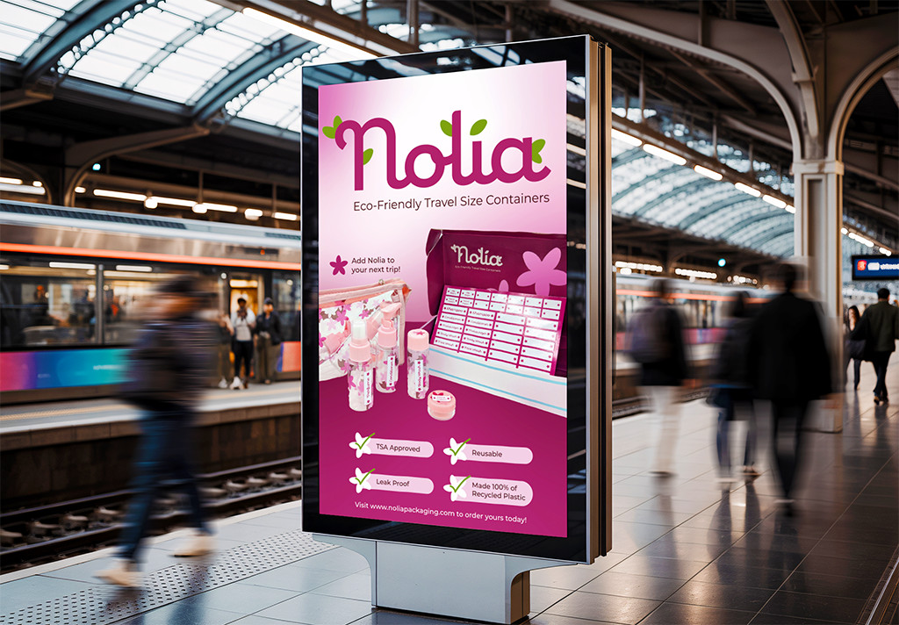
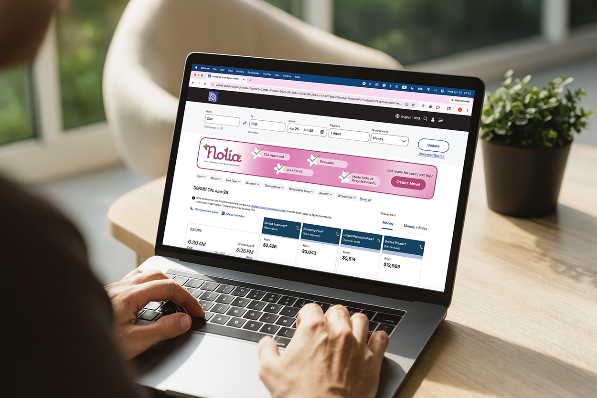
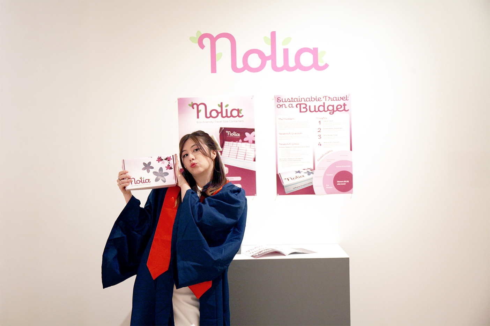
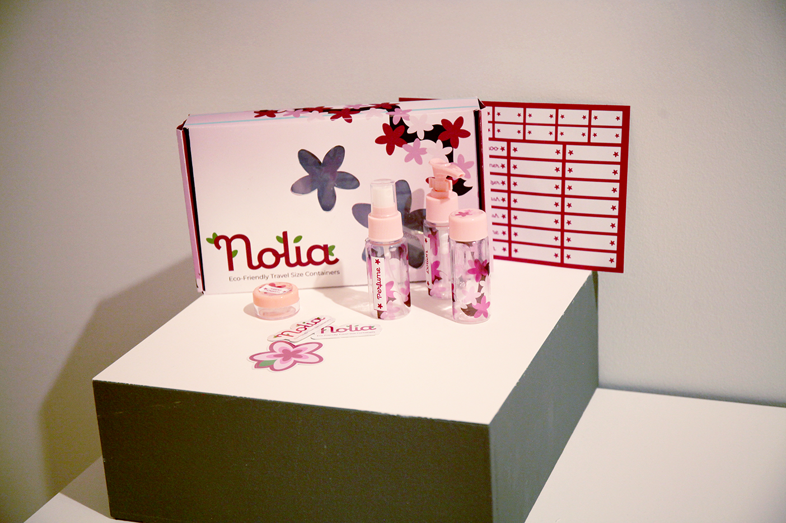
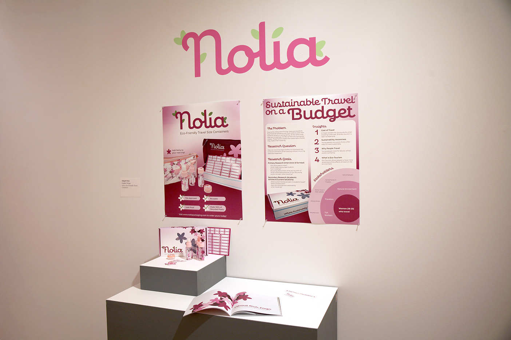

UIUC Geese EducationalCampaign
Design Research and Social Media Campaign
Follow the project on Instagram @geese1867!

Project Overview
The Problem
How Can We Statement
How might we reduce the negative perceptions and harmful behaviors of University of Illinois students towards geese?
Jump To
My Role
UX Researcher and Designer
Project Type
Social Media Campaign
Deliverables
Social Media Content, Brand Guidelines, Promotional Posters
Tools
Figma, Figjam, Adobe Illustrator
Industry
Education, Environmental Awareness
Contributions
Timeline
Jan 2026 - May 2026
Research
Primary Research Methoods
Survey: UIUC Campus
- 10 questions about geese opinions/interactions
- Released on social media and student org. communication channels
- Received 52 responses
Survey: General CU Population
- 9 questions about geese opinions/interactions
- Released on Reddit at r/Chambana
- Received 66 responses
Interviews
- 12 UIUC Students
- Prof. Jane Desmond (Anthropology, Human/Animal Relations)
- Dr. Stephany Lewis (VetMed Clinic Director)
Observations
- Bardeen Quad and South Quad
- 20-45 min per session
- Afternoon, Early February
- Recorded geese population counts, behaviors, and interactions with humans
Secondary Research Methods
Academic
- University research papers/studies
- The public and geese: a conflict on the rise? (Umeå University, 2020)
- Managing Human-Wildlife Interactions: Canada Goose (Virginia Extension Cooperation, 2023)
- Values and Attitudes Toward Canada Geese (University of Manitoba, 2024)
- Goose Spotting: A field guide for more-than-human investigations (Northeastern University, 2025)
- Canada Goose guides/toolkits from The Humane Society of the United States
Anecdotal
- Opinion pieces
- Modern Goose (New York Times Op-Doc, 2024)
- Local news
- Local Canada geese causing issues (CU Citizen Access, 2021)
- Nuisance or neighbor? Campus geese spark debate (Daily Illini, 2025)
- Online communities
- CU Friends of Geese Facebook group
- Champaign-Urbana area NextDoor
- r/UIUC, r/Chambana, and other forums
Research Insights
Digital and Physical Advertisments



Installation


